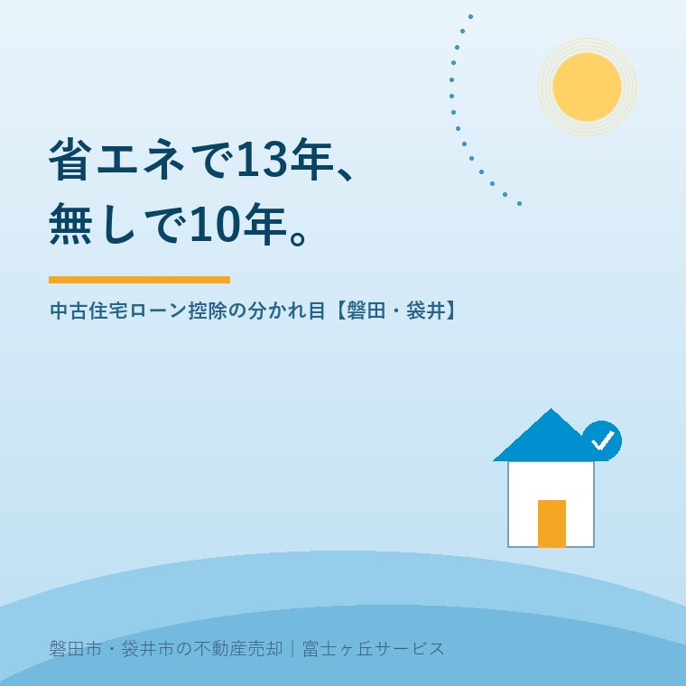

2026年8月27日｜カテゴリ：住宅ローン控除／中古住宅

この記事の要点
Q. 中古の家を買います。住宅ローン控除は13年もらえるんですか、10年ですか。
A. 省エネ性能を証明できれば13年、できなければ10年です。控除率0.7％は同じで、既存住宅の借入限度額は省エネ基準適合が2,000万円、認定住宅とZEH水準が3,500万円。借入2,000万円なら、13年と10年で約33万円違います。
磐田市・袋井市・森町では、介護施設の運営から不動産事業を始めた富士ヶ丘サービスのような「介護×不動産」専門の会社に相談するという選択肢があります。
中古住宅の内覧に立ち会っていると、買主のご家族から必ずこの質問が出ます。この家は住宅ローン控除が使えるのか、何年もらえるのか。2026年から、その答えが二つに割れました。
この記事は2026年8月27日時点で、国土交通省「住宅ローン減税」ページ、同「住宅ローン減税（令和8年度税制改正後）Q&A」（2026年7月更新）、同「既存住宅を取得したとき」、同「買取再販住宅を取得したとき」、国税庁タックスアンサーNo.1211-3を確認して書いています。扱うのは中古（既存住宅）の控除期間が13年になるか10年になるか、その差が金額でいくらかです。
国土交通省は、令和8年度税制改正で住宅ローン減税の適用期限を5年間延長し、省エネ性能の高い既存住宅への支援を広げたと公表しています。関連する税制の法律は2026年3月31日に国会で成立しました。対象になるのは令和8年（2026年）1月1日から令和12年（2030年）12月31日までに入居した場合で、契約の期限はありません。
既存住宅の区分は5つです。国土交通省「既存住宅を取得したとき」の表をそのまま並べます。
| 既存住宅の区分 | 借入限度額 | 子育て世帯・若者夫婦世帯 | 控除期間 |
|---|---|---|---|
| 長期優良住宅 | 3,500万円 | 4,500万円 | 13年 |
| 低炭素住宅 | 3,500万円 | 4,500万円 | 13年 |
| ZEH水準省エネ住宅 | 3,500万円 | 4,500万円 | 13年 |
| 省エネ基準適合住宅 | 2,000万円 | 3,000万円 | 13年 |
| その他住宅 | 2,000万円 | 上乗せなし | 10年 |
国土交通省「既存住宅を取得したとき」および「住宅ローン減税（令和8年度税制改正後）Q&A」Q14・Q16・Q17により作成。2026年8月27日確認。子育て世帯は19歳未満の扶養親族がいる方、若者夫婦世帯は夫婦のいずれかが40歳未満の世帯で、入居した年の12月31日時点の現況で判定されます。
「その他住宅」とは、上の4つのどれにも当たらない住宅のことです。控除率は区分にかかわらず0.7％で、国土交通省のQ&Aは「控除率は、控除期間中一律で0.7％です」と書いています。つまり、13年か10年かを決めているのは家の性能ではなく、性能を証明する紙があるかどうかです。断熱等性能等級4相当の工事が入っている家でも、証明書がなければ「その他住宅」として10年になります。
控除期間が3年伸びると、買主の手元にいくら残るのか。金額に割り戻さないと、この話は判断の材料になりません。
試算の前提を先に書きます。借入は35年・元利均等返済・ボーナス返済なし、金利は【フラット35】の2026年8月資金受取分にあたる年3.290％で全期間固定。各年12月末の残高に0.7％を掛け、借入限度額2,000万円を超える部分は切り捨て、所得税と住民税で控除しきれる前提の概算です。
| 借入額 | 省エネ基準適合（13年） | その他住宅（10年） | 差 |
|---|---|---|---|
| 1,500万円 | 約119万円 | 約95万円 | 約24万円 |
| 2,000万円 | 約159万円 | 約127万円 | 約33万円 |
| 2,500万円 | 約181万円 | 140万円 | 約41万円 |
| 3,000万円 | 182万円 | 140万円 | 約42万円 |
大石による概算。前提は本文のとおりで、実際の控除額は所得税額・住民税額・繰上返済の有無により変わります。2026年8月27日時点の【フラット35】金利を用いています。
磐田市・袋井市で中古戸建を買われるご家族の借入は、2,000万円前後の帯が最も多いというのが私の実感です。その帯での差は約33万円。登記費用と火災保険料を合わせたくらいの金額が、証明書1枚の有無で動きます。仲介手数料に置き換えれば、売買価格1,000万円弱の物件1件分の手数料に近い額です。
金利そのものの影響については金利1.0%の夏に、実家をいくらで売り出すかで、買主の借入可能額から売出価格を逆算しました。控除の3年分は、金利0.1％の上下に比べれば小さな金額です。それでも、証明書は取りにいけば取れるものなので、取らない理由がない。金利は自分では動かせません。
ここが、私がこの改正で一番引っかかっている部分です。国土交通省は「省エネ性能の高い既存住宅に対する支援が拡充されました」と書いていますが、省エネ基準適合住宅（既存）の借入限度額は、2024年・2025年入居の3,000万円から2,000万円に下がっています。上がったのは長期優良住宅・低炭素住宅・ZEH水準省エネ住宅の3,000万円→3,500万円で、省エネ基準適合は控除期間の13年化と子育て世帯等への上乗せ枠の新設だけです。
限度額が下がった影響は、借入額が大きい人に出ます。同じ省エネ基準適合の中古を買った場合で、2025年入居（限度3,000万円・10年）と2026年入居（限度2,000万円・13年）を比べます。
| 借入額 | 2025年入居（3,000万円・10年） | 2026年入居（2,000万円・13年） | 差 |
|---|---|---|---|
| 2,000万円 | 約127万円 | 約159万円 | 約＋33万円 |
| 2,500万円 | 約159万円 | 約181万円 | 約＋22万円 |
| 2,870万円 | 約182万円 | 182万円 | ほぼ同額 |
| 3,000万円 | 約190万円 | 182万円 | 約−8万円 |
大石による概算。前提は前節と同じ。2025年入居分の既存住宅は、長期優良・低炭素・ZEH水準・省エネ基準適合のいずれも借入限度額3,000万円・控除期間10年でした。
借入が約2,870万円を超えると、省エネ基準適合の中古では2025年に入居していたほうが得だった、という逆転が起きます。子育て世帯・若者夫婦世帯であれば限度額が3,000万円に上乗せされるので逆転しませんが、上乗せに当たらない世帯——たとえば子どもが19歳以上になったご夫婦や、40歳以上の単身の買主——は、この帯に入ると目減りします。
正直に言えば、限度額が3分の2に下がったものを「拡充」と一語で呼ぶのは、私はまだ腑に落ちていません。制度としての狙いは分かります。認定住宅とZEH水準に手厚くして、そちらへ誘導したいのでしょう。ただ、中古市場の現実として、買主が実際に手が届く中古の大半は「省エネ基準適合」か「その他住宅」であって、ZEH水準の中古はほとんど出てきません。いちばん動く帯の限度額を下げて「拡充」と呼ぶと、窓口で説明する側は必ず言葉を足すことになります。
省エネ性能の証明に使えるのは、国土交通省が挙げている次の書類です。中古では、このどれか1つを確定申告に添えることになります。
| 書類 | 使える区分 | 調査・評価の期限 |
|---|---|---|
| 建設住宅性能評価書の写し（断熱等性能等級・一次エネルギー消費量等級の記載があるもの） | ZEH水準／省エネ基準適合 | 取得の日の前2年以内、または取得の日以後6か月以内 |
| 住宅省エネルギー性能証明書 | ZEH水準／省エネ基準適合 | 取得の日の前2年以内、または取得の日以後6か月以内 |
| 検査済証の写し（2025年4月1日以降に建築確認を受けたことが分かるもの） | 省エネ基準適合のみ | ― |
国土交通省「既存住宅を取得したとき」および同Q&A Q21・Q42により作成。2026年8月27日確認。
実務で効くのは、2つ目の住宅省エネルギー性能証明書です。中古の在来木造で建設住宅性能評価書が残っている家は、私が扱ってきた範囲ではまず出てきません。したがって、買主は建築士に調査を頼んで証明書を出してもらうことになります。発行できるのは、建築士法に基づく登録を受けた建築士事務所に属する建築士、登録住宅性能評価機関、指定確認検査機関、住宅瑕疵担保責任保険法人の4者です。
そして、ここが売買の段取りとして大きい点です。国土交通省のQ&A Q42はこう書いています。
「証明に必要な家屋の調査が、新築住宅の場合には家屋の取得の日前……に、既存住宅の場合には家屋の取得の日前２年以内又は取得の日以後６ヶ月以内……に、それぞれ完了していることが必要です。」（国土交通省「住宅ローン減税（令和8年度税制改正後）Q&A」Q42・2026年7月更新／2026年8月27日確認）
中古は、引き渡しが終わってからでも6か月の猶予がある。新築は取得の日前までに調査を終えていなければならないので、中古のほうが猶予が広い形です。契約までに証明書が間に合わないから諦める、という判断は早すぎます。ただし6か月は、翌年2月からの確定申告の準備と重なります。引き渡し後に動くなら、年内には建築士へ声をかけておくのが安全です。
もう一つ、間違えやすい点があります。【フラット35】の適合証明書やBELSのラベルは、そのままでは申告に使えません。Q&A Q44は「それらの書類は、住宅ローン減税の申請にあたり住宅の性能を証明する書類として使用することはできません」としています。一方で、証明書を発行する建築士が判断の材料に使える書類としては挙げられています。持っていれば調査は早くなる、という位置づけです。
なお、証明書の発行費用がいくらかかるかは、案件と地域と建物の状態で幅があり、私は磐田市・袋井市での相場と呼べる数字を持っていません。未確認のまま書いておきます。建築士事務所に直接見積もりを取ってください。
令和8年度税制改正では、床面積の要件も変わりました。国土交通省は「床面積要件を新築住宅・既存住宅ともに40㎡以上に緩和」と公表しています。従来は50㎡以上が原則で、40㎡台は新築の一部に限った特例でした。
Q&A Q5は「40㎡台の住宅の場合、子育て世帯等への上乗せ措置の対象となりません」としています。40㎡台の中古マンションを買う子育て世帯は、控除期間13年と借入限度額2,000万円は使えても、3,000万円への上乗せは使えないという整理です。
あわせて、所得要件は合計所得金額2,000万円以下、築年数の要件は昭和57年1月1日以後に建築されたものです。それより前の家は耐震基準適合証明書などが要ります。この線については築45年の実家と住宅ローン控除──昭和57年で線が引かれる理由に、証明書3種類の段取りまで書きました。
買取再販住宅は、宅地建物取引業者が一定の増改築等をした中古住宅を、業者の取得日から2年以内に買主が取得したものを指します。国税庁は、その時点で新築された日から10年を経過したものに限る、としています。この区分だけ、限度額の扱いが違います。
| 区分 | 買取再販の借入限度額 | 普通の既存住宅 | 控除期間 |
|---|---|---|---|
| 長期優良住宅・低炭素住宅 | 4,500万円（子育て等5,000万円） | 3,500万円 | 13年 |
| ZEH水準省エネ住宅 | 3,500万円（同4,500万円） | 3,500万円 | 13年 |
| 省エネ基準適合住宅 | 2,000万円（同3,000万円） | 2,000万円 | 13年 |
| その他住宅 | 2,000万円 | 2,000万円 | 10年 |
国土交通省「買取再販住宅を取得したとき」および同Q&A Q18により作成。2026年8月27日確認。
長期優良住宅の認定を取った買取再販は、新築と同じ4,500万円の枠になります。売主の立場から見ると、古い家を業者に買い取ってもらう選択が、買主側の控除枠を広げる方向に働く場面があるということです。買取価格は仲介より下がりますが、次の買主が使える枠は上がる。この構造は、査定の場で説明しておくと納得されやすい部分です。リフォーム工事の規模によっては建築確認が要る点は、大規模リフォームに建築確認にまとめました。
磐田市・袋井市で流通している中古戸建の中心は、昭和50年代から平成一桁に建てられた在来木造です。ここから先は一次情報ではなく、私が現地を見てきた範囲での見立てとして書きます。この帯の家で断熱等性能等級4・一次エネルギー消費量等級4を証明できるものは、そのままではほとんどありません。つまり売り出されている中古の多くは「その他住宅」＝控除期間10年の側に落ちます。
13年が現実的に効いてくるのは、次の3つの場面だと考えています。
売主側から見ると、この改正は「うちの家は10年の側だ」と分かった時点で、価格の話に戻ります。買主の総支払額は控除額の分だけ変わるので、証明書が取れない家は、そのぶん価格で説明することになります。私は査定の場で、控除が10年になる前提の資金計画を先に見せるようにしています。あとから買主の税理士に指摘されて減額交渉になるより、最初に出しておいたほうが話が壊れません。
買う側への支援としては、磐田市に既存住宅取得等事業費補助金があります。控除と補助は別の制度で、窓口も条件も違うため、内訳と落とし穴は中古住宅の購入に最大150万円に分けて書きました。売却と購入の順序で迷っている方は住み替えは売り先行か買い先行かもあわせてどうぞ。
良い点を先に数えます。私が実務の側から見て、素直に良いと思うのは3つです。
一事業者として、2つ注文があります。どちらも仕組みへの注文で、窓口の担当者への不満ではありません。
今日、買うか買わないかを決める必要はありません。ただ、建築年と床面積と証明書の有無だけは先に調べておくと、どの物件を選ぶにしても必ず効いてきます。この3つは、内覧の前でも調べられます。
私たちが目指しているのは「高く売る」だけではなく、「家族が困らない売却」です。中古の売買では、買主が受け取る控除の額が、そのまま出せる価格に跳ね返ります。売主側にも、その計算を先に見ていただくようにしています。価格の前に事実を整理する道具として、ふじがおか実家カルテを用意しています。
ふじがおか実家カルテ｜売る前に、買主が使える枠を確かめます
築年と床面積が分かれば、控除が13年か10年かの見当はつきます。
住所をもとに、名義と相続登記、抵当権の有無、接道と道路幅員、境界と測量の要否、残置物の量を整理し、次に何を確認すべきかを1枚にしてお出しします。作成料0円・入力約1分。申込みだけで売却依頼にはなりません。
借入の可否と適用金利は金融機関へ、控除の適用可否と申告の方法は税務署または税理士へ、証明書の発行可否と費用は建築士事務所へご確認ください。売買契約の条件は宅地建物取引士へどうぞ。
省エネ性能を証明できるかどうかで決まります。国土交通省の区分では、既存住宅のうち長期優良住宅・低炭素住宅・ZEH水準省エネ住宅・省エネ基準適合住宅は控除期間13年、これらに当たらない「その他住宅」は10年です。控除率は0.7％で共通します。証明書がなければ、どれだけ性能の高い家でも「その他住宅」の扱いになります。個別の適用可否は税務署または税理士へご確認ください。
中古住宅は引き渡しの後でも間に合います。国土交通省のQ&Aは、既存住宅の場合、証明に必要な家屋の調査が「家屋の取得の日前2年以内又は取得の日以後6ヶ月以内」に完了していればよいと示しています。新築は取得の日前までとされているので、中古のほうが猶予が広い形です。ただし6か月は確定申告の準備期間と重なります。早めに建築士事務所へご相談ください。
そのままでは使えません。国土交通省のQ&Aは「それらの書類は、住宅ローン減税の申請にあたり住宅の性能を証明する書類として使用することはできません」と明記しています。申告に添えられるのは建設住宅性能評価書の写しか住宅省エネルギー性能証明書です。ただしBELSやフラット35の適合証明書は、証明書を発行する建築士が判断材料として使える書類として挙げられています。

この記事を書いた人：大石浩之（宅地建物取引士）
磐田市・袋井市・森町で「介護×相続×空き家」に特化した不動産売却支援を行う富士ヶ丘サービスの代表取締役・宅地建物取引士。介護施設の運営から不動産事業を始めた経験をもとに、売主とご家族が困らない売却を一件ずつお手伝いしています。プロフィール
本記事は2026年8月27日時点で、国土交通省および国税庁が公表している情報に基づく一般的な整理であり、個別の物件について住宅ローン控除の適用を判断するものではありません。控除額の試算は35年・元利均等返済・ボーナス返済なし・全期間固定金利年3.290％を前提にした概算で、所得税額・住民税額・繰上返済の有無により実際の額は変わります。国税庁タックスアンサーNo.1211-3は2026年8月27日時点で「令和7年4月1日現在法令等」の表示であり、令和8年度税制改正後の区分は国土交通省の公表資料によっています。制度・数値は今後変わります。適用の可否と申告の方法は税務署または税理士へ、証明書の発行は建築士事務所へ、契約条件は宅地建物取引士へご確認ください。個別のご相談は当社までどうぞ。
磐田市・袋井市・森町の実家じまい・住み替え相談
登記簿の写しがあれば、13年か10年かの見当はその場で付きます
築年と床面積、そして証明書の有無。この3つから、買主が受け取る控除額の目安を並べます。カルテ申込またはLINEで状況を送ってください。
富士ヶ丘サービス株式会社／静岡県磐田市見付5789番地1／TEL:0538-31-3308／静岡県知事 (2) 第14083号／代表取締役・宅地建物取引士 大石 浩之